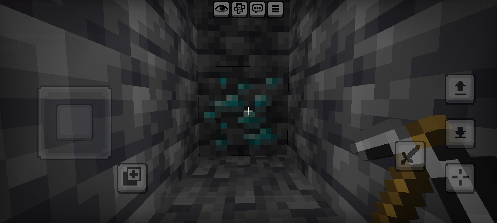

Minecraft es un juego de tipo "sandbox" o caja de arena donde la
única limitación es tu imaginación. Puedes construir castillos
medievales, granjas automaticas de redstone o simplemente
dedicarte a explorar biomas infinitos
Guía de supervivencia:
Mis creaturas favoritas (Mobs)
| Criatura | Comportamiento | Peligrosidad |
| Creeper | Silencioso y explosivo | Alta |
| Enderman | Teletransporte (no los mires) | Media |
| Aldeano | Comerciante pacífico | Nula |
Minería
La minería en Minecraft, es algo muy importante, porque nos permite
encontrar minerares, los cuales nos pueden ayudar a mejorar nuestras armas,
equipo y herramientas. Y también sirven para decoración, alguno de estos que
sirven para los dos, es el cobre, que nos permite mejorar nuestras herramientas
y crear decoración.
Mi mineral favorito es el Diamante.

¿Por qué me gusta este juego?
Lo que hace a Minecraft es que no hay una sola forma
de jugar. Puedes ser un arquitecto, un aventuredo, un
técnico de circuitos o simplemente un granjero que vive
tranquilo con sus vacas...
Si entraste a mi página web, te pido por favor que me mandes
un mensaje de que te parecio a mi número